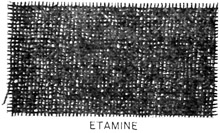
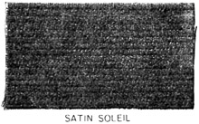
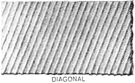

1923—Woolen Materials and Tailored Plackets
Woman's Institute of Domestic Arts & Sciences,
by Mary Brooks Picken
WOOLEN MATERIALS
Remarks
1. From time immemorial woolen materials have been the mainstay in garment construction. From the days long before the homespun of our forefathers to the present day of weaves of every description, fabrics made of wool have not been surpassed in practicability for garments intended to give warmth and at the same time be stylish and durable. Of course, before the weaving of fabrics from wool was taken up as a commercial enterprise, the designs, weaves, and colorings were few. The people of the olden days, it is true, were adept in weaving and dyeing, but it remained for the textile manufacturer to bring out in a practical way the various weaves, colorings, finishes, and effects that give to the woman who sews an excellent assortment of woolen fabrics from which to create pleasing, satisfactory garments.
2. The chief source of wool from which woolen fabrics are made is the sheep; but it is not from this animal alone that wool is obtained. It is possible to procure fabrics containing the wool of such animals as the llama, the alpaca, the camel, and several species of goats, particularly the Angora goat and the Cashmere goat of the Himalayas. Many breeds of sheep are grown purposely for the wool they give, and many are the grades of wool derived from them. Yet, not all the wool obtained from sheep and other animals enters into the manufacture of cloth for garments; much of it is used in the manufacture of blankets, carpets, rugs, hats, stockings, and other useful articles. However, it is not the purpose here to enter into a discussion of the kinds of wool used for the different kinds of cloth and other materials; rather, it is the intention to give some facts that will aid in selecting woolen fabrics intelligently when the occasion demands.
3. The old idea that woolen materials are not so good as they used to be has long since been disproved, and the fact remains that just as good material, and even better, can now be obtained. Of course, the vast quantities of woolen material that are now manufactured have much to do with poor material creeping in; but sight must not be lost of the fact that cloth manufacturers, to meet demands, must in many cases produce fabrics that look well and that can be sold at a price to satisfy persons who want such goods.
The varieties of woolen cloth or fabrics are many, as are also the weaves, and the colorings are almost beyond description; in fact, it is not too broad an assertion to say that woolen materials of every color imaginable can be procured. The designs, too, beggar description, for with the plaids, stripes, checks, and other designs that are possible in the modern manufacture of woolen fabrics there is little left to be done; indeed, the yearly task of creating something new in dress goods to satisfy the demands of fashion grows more severe from year to year, and, as in connection with styles, it is simply a matter of bringing out in a different way something that has been seen before.
4. It is well to bear in mind that all woolen fabrics are not made of new wool entirely. Indeed, there is only a small percentage that is all wool. In many so-called woolen materials, shoddy, which is fiber remanufactured of shredded rags of flannels, yarns, stockings, and other soft woolen fabrics, mungo, which is derived from the shreds and clippings of milled woolen cloth, and other adulterants are used to replace new wool. By blending or mixing wool in this manner it is possible to produce woolen materials that serve their purpose very well at a lower cost than would be possible otherwise, and, at the same time, by knowing how, the manufacturer is able to produce color effects and textures that are suitable for the ever-increasing desire of the buying public for something different.
5. In the manufacture of textiles, mixtures of wool and silk, wool and linen, and wool and cotton are not uncommon. Many persons contend that mixed fabrics, as such materials are called, wear better than all-wool materials. Whether or not this is true is debatable, so far as silk-and-wool and linen-and-wool mixtures are concerned; but in connection with cotton-and-wool mixtures there is no question of its inferiority to all-wool fabrics. Cotton-and-wool fabrics are, of course, cheaper, but it stands to reason that a material whose warp threads are of cotton and whose woof threads are of wool will not stitch so evenly nor press so well; then, too, the cotton threads are twisted harder than the woolen threads and they have a tendency to cut the threads of wool, causing them to wear away before the cotton ones do and thus giving the material a cheap, cottony appearance.
It must be admitted, however, that each material has its place in the making of garments; but all-wool fabrics have marked advantages over those which are adulterated, and a knowledge of how to proceed in the selection of woolen materials should be a source of great satisfaction to the person who sews.
HINTS ON THE SELECTION OF WOOLEN MATERIALS
6. In the selection of woolen materials for garment construction, a number of points must be taken into consideration if it is desired to get fabrics that are up to the standard. There is no set procedure to follow, but the material should be examined to ascertain whether it is all wool, and the nature of the fabric, its condition, its color, and its weave and design should all be looked into carefully.
7. Test for Wool.—To know that material for a dress is all wool is not only a source of satisfaction, but a necessity in many instances, for all-wool fabrics do not wrinkle easily and they lend tone to a garment because they may, unless very heavy, be draped and hung with good results. A good way in which to determine whether material is all wool is to touch a small piece with a lighted match. Wool singes readily with a very little flame and gives off a disagreeable odor similar to that of burning hair, while cotton threads flame up and smoke, but do not burn so quickly as do those of wool.
8. Nature of Fabric.—No fabric should be accepted on its name alone. It should be examined carefully in order to make sure that it will lend itself to sponging and pressing and that the warp and woof threads harmonize in weight and blend together so that the material will retain pressing and not become rough nor full up.
9. Condition of Goods.—All woolen fabrics, or any kind of material and trimmings, for that matter, should always be examined carefully to see that they are absolutely clean and free from signs of shop wear, such as faded lines on the outside folds, spots, dust streaks, or pulled threads. Such goods, though, may often be bought at a considerable reduction in price, and where time is not to be considered the material may be cleaned, sponged, and pressed to appear almost as good as new.
10. Color of the Material.—The coloring of woolen materials, or fabrics, should not be regarded lightly. Colored woolens, to be satisfactory, should be dyed evenly, and the color itself should be good and clear in order to withstand the sponging and pressing that is necessary in the making of garments. Sharp, hard colors in woolens denote, as a rule, cheap materials, for the nature of good wool is to dye soft and even. In examining the color, it is well to separate one woof thread of the material and to hold this thread in the best light possible to get the full effect of the tones of the color. It is always best to examine any fabric, especially woolen fabrics, in the full daylight—not in half-lighted stores or under artificial light of any kind. If, in purchasing such material, the light in the store is not good, permission should be obtained to take the goods to the store door or a window so that it may be examined in daylight. Salespeople will generally grant such a favor gladly, for they know that all good woolen fabrics appear at their best in such light.
11. Design and Weave of the Material.—The design and weave of the fabric should also be carefully considered in selecting woolen materials. When examining the design or the weave, it is advisable to place the cloth between the purchaser and the light; in this position the design can be seen to the best advantage, and imperfections, if there are any, can be more readily detected.
The weave of woolen fabrics affects the wearing quality, the color, the construction, and the success of the finished garment itself. A close, twilled weave makes a firm, durable material, while looser weaves often do not wear or retain their shapes so well; on the other hand, the closer weaves become shiny more quickly than do the loosely woven fabrics, although they wear better and are less likely to catch on rough surfaces or sharp projections. Imperfections in weaving are often a cause of weakness in the material; and sometimes weakness is due to too great a difference in the strength of the warp and woof threads. Such a defect as the latter can be detected by holding the material to the light or by exerting pressure with the thumb and the fingers. Materials having cords or ribs running one way are weaker than fabrics in which the cords or ribs run in both directions, for the reason that cords or ribs, to be brought out prominently, must be combined with threads that are finer and more loosely woven. By crushing woolen material in the hands and rubbing it together, the way in which it will wear can be told with a fair degree of accuracy, for the roughness of the surface will be brought out just as it would be in wearing.
KINDS OF WOOLEN MATERIALS AND THEIR USES
12. In addition to knowing the points to cover in the selection of woolen fabrics, a knowledge of the various kinds of woolen materials, as well as their quality, width, and price and for what purpose each kind is best adapted, is very essential to every person who sews. With this fact in mind, there is here presented a table of woolen materials.
This table, designated as Table I, can be studied to good advantage, and should ever serve as a convenient reference. Only standard materials are considered in this table, for the reason that, as in connection with domestic materials, each season brings out so many varieties of colors and textures that it is quite impossible to give anything very definite regarding them; yet, as each new fabric closely resembles some standard material, no one thoroughly familiar with all standard materials should ever be at a loss to distinguish their relationship.
Many of the fabrics brought out, for want of a better name, are referred to as novelty suitings. However, such materials are greatly sinned against by some merchants, who, in order to get rid of odds and ends, place on sale as novelty suitings what are really remnants of irregular and rough weaves.
Manufacturers and dealers often make a distinction between woolen and worsted fabrics. In the manufacture of cloth, worsteds are fabrics made from long staple wools and woolens are fabrics made from short staple wools. In the yarns of the former, all the fibers lie parallel, and in the yarns of the latter they cross or are mixed. However, in a general way, there is scarcely any reason for trying to make such a distinction here, because each kind of standard woolen fabric possesses a name by which it is distinguished from other fabrics.
TABLE I—WOOLEN MATERIALS
NOTE.—The prices in this table are based on normal trade conditions
| Name | Usual Width in Inches | Usual Price per Yard | Description |
| Albatross | 36 to 45 | 50c. to $2 | Soft, loosely woven material in black, white, and colors; also made in fancy weaves. Closely related to nun's veiling or chiffon batiste. Used for shirred and draped dresses. |
| Albert cloth | 40 to 54 | $1.50 to $7 | Reversible, double-faced material, each side a different color. Used for coats, suits, and wraps. |
| Alpaca | 36 to 45 | 75c. to $3 | Strong, elastic, wiry fabric with a glossy brightness of silk. Used for men's summer suits and coat linings, and for women's tailored skirts. |
| Armure | 36 to 40 | 50c. to $4 | Similar to alpaca and used for the same purposes. Woven in bird's-eye and diamond effect, sometimes in two colors. |
| Astrakhan, or astrachan | 40 to 60 | $1.50 to $15 | A woolen or silk material with a long, closely curled pile in imitation of real astrakhan. A most desirable material, producing considerable warmth. Used for coats for men, women, and children; also, for caps, muffs, scarfs. |
| Barathea | 48 to 56 | $1.50 to $3 | Fine, soft, close weave in imitation pebble effect. Excellent for dresses and light-weight suits. |
| Batiste, wool | 30 to 40 | 50c. to $1.50 | Light-weight, all-wool material with even warp and woof in plain colors; sometimes called tamise; in very light weight, called chiffon batiste. Used for afternoon and evening dresses. |
| Bedford cord | 44 to 56 | 50c. to $5 | Material with lengthwise cord, raised surface with plain stripes between; made in cotton and wool. Popular at times. Used for tailored skirts and suits. |
| Bengaline | 36 to 54 | $1.50 to $8 | Wool-and-silk material with a heavy, filled crosswise cord of wool that is covered with threads of silk and wool. Used for skirts and suits. |
| Boucle | 44 to 54 | $1.50 to $6 | Similar to astrakhan, but more loosely woven and lighter in weight; has only parts of the surface covered with the curly loops of yarn. Used for coats and capes. |
| Brilliantine | 36 to 54 | 50c. to $5 | Wiry silk-wool fabric, like alpaca, but usually of higher luster; made from Angora-goat hair. Used the same as alpaca. |
| Broadcloth | 50 to 60 | $1.50 to $10 | Smooth, soft-finished, closely woven fabric with an up and down, or nap. The softness of the yarn used in weaving makes it possible to obtain beautiful colorings in dyeing. Always popular and in good taste for dresses, suits, and coats. |
| Brocade, wool | 36 to 56 | 50c. to $8 | Wool fabric with designs woven in by means of an irregular weaving of the warp and woof. Sometimes in very simple patterns, but more often in large, elaborate figures. Used for dresses, suits, trimmings, etc. |
| Camel's hair | 40 to 56 | $1 to $7 | A fabric with a hairy surface made entirety or partly of camel's hair. In cheaper grades, cow hair is used, when the material is called camel's-hair back. Used for coats, overcoats, and horse blankets. |
| Cashmere | 36 to 45 | 75c. to $2.50 | A soft, twilled weave in beautiful shades and sometimes woven-in figures. Attractive and durable for women's dresses and for children's and infants' wear. |
| Challis, challie, or chally | 27 to 36 | 35c. to $1 | Light-weight woolen material in smooth weave. Has beautiful plain and printed color combinations; wears satisfactorily; and is easily cleaned. An excellent material for dresses and negligees. |
| Cheviot | 42 to 54 | $1.25 to $6 | Diagonal cord weave with slight nap; usually heavy weight. Used for suits and coats. Requires much care in tailoring, especially in pressing. |
| Chinchilla | 44 to 60 | $2 to $12 | Very fine, closely woven pile fabric in imitation of chinchilla fur. The cheaper qualities rough up and soon appear shabby. Used for heavy coats and for men's overcoats. |
| Clay worsted | 44 to 56 | $1 to $4 | Soft twilled fabric similar to serge. Used for dresses and suits. |
| Covert cloth | 44 to 54 | $1 to $5 | Material of firm, diagonal twilled weave. Usually in light tan; wears well and tailors nicely. Used chiefly for outing suits and wraps. |
| Cravenette | 40 to 54 | $1.50 to $5 | Fine twilled fabric similar to serge and filled from the wrong side with a sizing that renders the material moisture-proof. Used for coats, capes, and ulsters. |
| Crepe, silk and wool, or S.W. crepe | 40 to 52 | $1 to $3 | A soft, even crepe weave suitable for draped dresses. |
| Crepe, wool | 36 to 54 | 50c. to $4 | Twisted woof-thread woven in crinkled effect; sometimes called eponge. Extensively used for dresses. |
| Doeskin | 40 to 48 | $3 to $10 | A compact, twilled woolen with a texture that is pliable without being flimsy. Used for gloves, skirts, coats, hats, wraps, and for linings in heavy fur coats. |
| Drap d'Alma | 50 to 56 | $1.50 to $5 | Soft, double-diagonal twill. Excellent fabric for dresses and suits. |
| Duvetene, or duvetyn | 48 to 56 | $1.50 to $7 | The body of the material of a weave similar to flannel, and which, with a short, soft nap, is used for children's coats and women's suits and coats. |
| Eiderdown | 27 to 44 | 35c. to $2.50 | A soft, twilled, cotton-filled fabric with a long-wool nap, sometimes on just one side and sometimes on both sides, the former being called single-faced and the latter, double-faced. Used extensively for children's garments; also, for lounging and bath robes. |
| Etamine | 42 to 46 | $1.25 to $3 | Soft, light-weight woolen in plain open weave. Used for shirred and plaited dresses. |
| Felt | 18 to 72 | 80c. to $10 | A firm-packed, smooth fabric. Used for table covers, pennants, etc. |
| Flannel | 27 to 36 | 50c. to $2.50 | Plain, soft, loosely woven material with warp and woof threads of equal size. Extensively used for infants' petticoats and sacks and for men's shirts. In colored, loose weaves, sometimes called hop sacking, or sacking, it is used for men and women's suits. |
| Gabardine | 40 to 56 | $1 to $4.50 | Finely woven twilled cord in diagonal weave; similar to French serge. Used for women's skirts, coats, and suits. |
| Gloria | 36 | 50c. to $1.50 | Diagonal twilled weave of wool, silk, and cotton; strong and durable; sometimes called zanella cloth. Used chiefly for umbrellas. |
| Granite | 36 to 44 | 50c. to $2.50 | Hard twisted woolen yarn woven in armure effect; light in weight and very durable. Used for skirts and suits. Requires care in tailoring. |
| Grenadine | 36 to 54 | 75c. to $4 | Loosely woven material; sometimes in striped effect, and sometimes made of silk and cotton. Used for dresses. |
| Henrietta | 36 to 44 | 50c. to $2 | A fine diagonal twilled dress fabric similar to cashmere, but with a little harder, coarser weave. Used the same as cashmere. |
| Homespun | 42 to 50 | 75c. to $4 | A loose, rough material of plain weave and coarse yarn. Formerly made on hand looms at home; now imitated by machine. The soft, even warp and woof threads lend themselves to tailoring. Used for outing suits and men's clothes. |
| Jean | 36 to 40 | 50c. to $1.50 | A twilled, undressed cloth with cotton warp and woolen woof, or sometimes in all cotton, and referred to, in the plural, as jeans. Used for trousers, boys' suits, and women's outing suits. |
| Jersey cloth | 27 to 52 | 50c. to $3 | Woolen or silk mixed stockinette weave. Used chiefly for undergarments and petticoats. |
| Karakul cloth | 50 to 60 | $3 to $18 | Made in imitation of Persian lambskin; some imitations closely resemble the real lambskin, which has short hair tightly curled to the body. Used for women and children's coats and for muffs and stoles. |
| Kersey | 48 to 60 | $2 to $5 | A light-weight beaver cloth; does not fray or stretch easily. Used for suits, capes, and overcoats. |
| Lansdowne | 36 to 40 | $1 to $2 | A very fine, wiry, silk-and-wool material in plain weave. Used mostly for women's dresses. |
| Matelasse | 42 to 56 | $1.50 to $7 | Wool or wool-and-silk material having raised designs similar to quilting. Used for suits and coats and as trimmings. |
| Melton | 52 | $2 to $6 | Thick, heavy, felted material, finished without pressing or glossing. Usually made in dark blue and black; does not clean well. Used for outing suits and overcoats. |
| Merino | 40 to 52 | $2 to $6 | Fine French all-wool dress fabric; twilled on both sides. Excellent for women's dresses. |
| Mistral | 40 to 48 | $1 to $3 | Twisted warp-and-woof threads woven to give a crepe effect. Used for dresses. |
| Mohair | 40 to 44 | $1 to $2 | Similar to brilliantine, but woven of finer yarn in watered or gros-grain effect. Sometimes combined with silk or cotton. Used for women's suits and men's coats. |
| Novelty suitings | 40 to 56 | 75c. to $5 | Originally of plain homespun weave with rough, irregular filling of different colors; but the name is frequently applied to all weaves, especially brocaded or Jacquard effects. Used for skirts and suits. |
| Nun's veiling | 36 to 50 | 75c. to $2 | Soft, light-weight fabric, in plain weave. Sometimes called wool batiste; coarser weaves called nun's cloth. Very satisfactory for shirred dresses, as it drapes well. |
| Ottoman, wool | 45 to 54 | $1 to $3 | Smooth, ribbed weave, similar to panama. Used for dresses and light-weight suits. |
| Panama | 42 to 54 | 50c. $2.50 | Hard twisted yarn, in plain weave. Used extensively for skirts; sometimes for suits. |
| Poplin, wool | 40 to 56 | $1 to $4 | Same weave as cotton poplin. A firm, durable fabric. Sometimes woven in silk and wool, the very light weight of which is called eolienne cloth or poplinette. Used extensively for dresses, skirts, and suits. |
| Prunella | 40 to 54 | 75c. to $2.50 | Fine, closely woven twilled fabric. Used for dresses, light-weight suits, and clergymen's robes. |
| Ratine, wool | 32 to 46 | 50c. to $4 | A loosely woven fabric, the woof threads of which are looped to give a rough, uneven weave. Used for dresses and suits. |
| Rep | 40 to 50 | $1.50 to $4 | Material woven with a rib, or cord, crosswise. Used in skirts and suits, and in clothes for men and boys. |
| Satin soleil | 45 to 54 | $1 to $3 | A smooth crosswise weave in satin finish. Used considerably for dresses and light-weight suits. |
| Serge | 36 to 56 | 50c. to $4 | Most popular of all woolen materials, because of its reasonable price and its durability. Foundation of diagonal twilled weave; manufactured in several varieties. Used for dresses and suits and coats for men and women. |
| Serge, French | 36 to 56 | 50c. to $4 | Very fine, soft weave; easily tailored; wears splendidly, but in wearing produces a shine more readily than other serges. Used for dresses, skirts, and suits. |
| Serge, mohair | 36 to 44 | $1 to $3 | Wiry weave, difficult to tailor. |
| Serge, storm | 44 to 56 | $2 to $3.50 | Hard, fine weave with nap. |
| Serge, wide wale | 36 to 54 | 50c. to $3 | Pronounced diagonal weave. Used for dress skirts and suits. |
| Sicilienne | 42 to 54 | 50c. to $3 | Material with cotton warp and wool or mohair woof, which gives a wiry finish. Used for men's dusters and summer coats. Also used for women's wear. |
| Taffeta, wool | 40 to 52 | $1 to $5 | A wool fabric in a closely woven, smooth weave. Similar, but of finer quality, than panama. Used for dresses, skirts, and suits. |
| Tartan | 40 to 54 | $1 to $5 | Material with hard-twisted warp and woof threads, with stripes running at right angles to each other. Sometimes it comes in variegated colors, which material is called tartan plaid. Used for suits and skirts. |
| Tussah, wool | 40 to 45 | 75c. to $1.50 | Wool warp with mohair woof, which gives a luster; light in weight. Used for dresses and suits. |
| Tweed | 44 to 56 | $1 to $5 | Rough, unfinished, open texture, in homespun effect. Usually several shades mixed, but without the patterns clearly defined. Very serviceable for suits and coats. |
| Velour, or velure | 44 to 56 | $1.50 to $5 | Soft, closely woven, smooth fabric. Used for suits, coats, and capes. |
| Venetian | 44 to 56 | $1 to $3 | Similar to broadcloth, but not so glossy nor so satisfactory. Woven with a fine diagonal twilled face. Used for dresses, skirts, and suits. |
| Whipcord | 36 to 54 | 75c. to $5 | In raised corded effect and semi-diagonal weave. Cord varies in width from extremely narrow to 1/8 in. Used for skirts and suits. |
| Zibeline | 44 to 56 | $1 to $6 | Material of plain weave filled with glossy hair, which gives a nap 1/8 to 1/4 in. long. Similar to camel's hair. Used for suits and overcoats. |
|  | ||
13. To assist further in coming to a clear understanding of woolen materials, there are illustrated in Figs. 1 to 4 thirty-one kinds of fabrics. These illustrations show clearly the weaves of the different materials, and as the name of each is given in its proper place these names are not mentioned here.